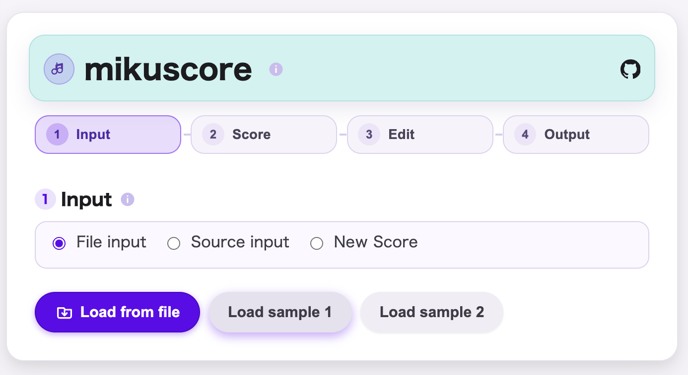
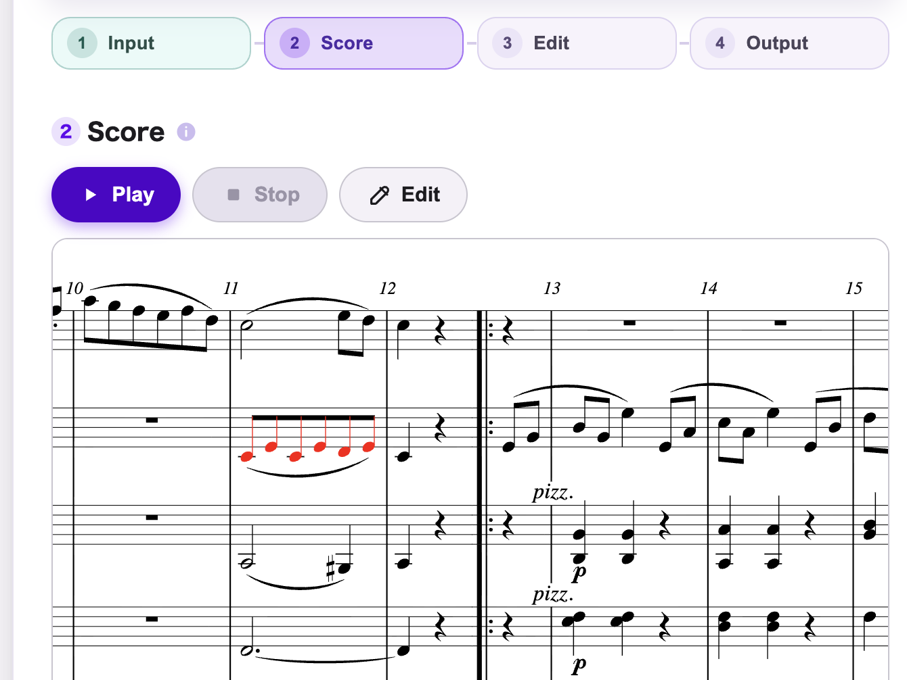
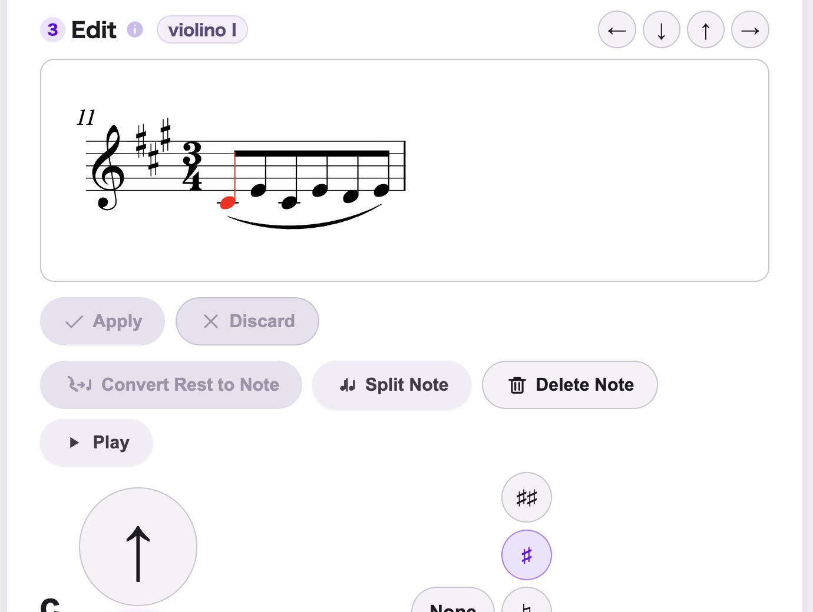
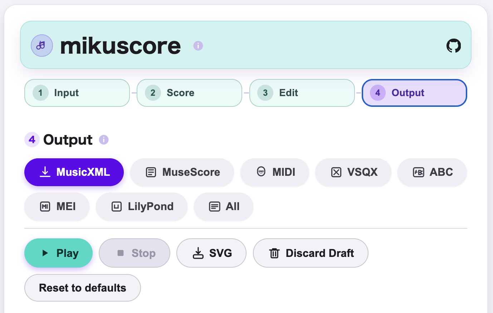

mikuscore
Updated: 2026-04-18
English
mikuscore is a browser-based score format converter centered on MusicXML. It runs offline as a single-file web app.
- MusicXML-first conversion pipeline.
- Designed to preserve existing MusicXML as much as possible.
- Keeps conversion losses visible via diagnostics / metadata.
- No installation required (single HTML, browser only).
Supported formats: MusicXML (`.musicxml` / `.xml` / `.mxl`), MuseScore (`.mscx` / `.mscz`), MIDI (`.mid` / `.midi`), VSQX (`.vsqx`), ABC (`.abc`), MEI (`.mei`, experimental), LilyPond (`.ly`, experimental).
A convert-first CLI is also available for scripted workflows. Related projects include mikuscore-skills, which embeds mikuscore into generative-AI workflows, and miku-abc-player, which makes an ABC-limited subset of mikuscore easier to use.
Screenshots / スクリーンショット




日本語
mikuscore は、MusicXML を中核に据えたブラウザベースの譜面フォーマット変換ソフトです。 単一 HTML 配布でオフライン動作します。
- MusicXML-first の変換パイプライン。
- 既存 MusicXML を極力壊さない編集を重視しています。
- 変換で生じた欠落を診断情報・メタデータで追跡できます。
- インストール不要（単一 HTML、ブラウザのみ）。
対応フォーマット: MusicXML（`.musicxml` / `.xml` / `.mxl`）、MuseScore（`.mscx` / `.mscz`）、MIDI（`.mid` / `.midi`）、VSQX（`.vsqx`）、ABC（`.abc`）、MEI（`.mei`、実験的対応）、LilyPond（`.ly`、実験的対応）。
スクリプト利用向けには convert-first の CLI もあります。関連プロダクトとして、 mikuscore-skills は mikuscore を生成 AI ワークフローに組み込むための agent skills、 miku-abc-player は mikuscore の機能を ABC に限定して使いやすくした companion web app です。